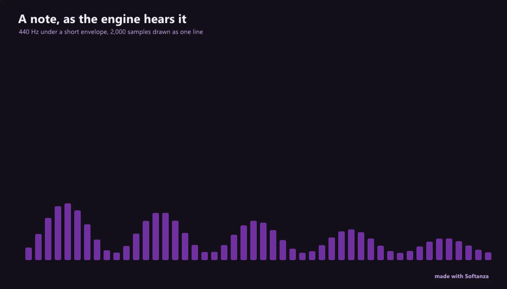

Sound
Fully shipped: a lock-free callback, an owned graph, librosa-grade analysis, sonification.
5 Strong · 5 Solid · 1 Partial · 1 Emerging
Measured against: miniaudio · Web Audio · JUCE · Folders: base/sound(opens in a new tab) · The guide to this area's functions

Rethought from first principles
What Softanza kept from what works, and what it rethought, as the library wrote it down in its design documents and narrations.
The Softanza wayA sound is described, not hand-built: you declare a graph or a meaning, the engine renders it, and a listener is the last judge.
Kept from the best practice
- Device input and output and file decoding come from miniaudio: one public-domain file, no dependencies, all three operating systems, playback and capture. Only the missing half is borrowed. source(opens in a new tab)
- The real-time rule of audio is kept strictly: the device callback never allocates memory, never locks and never calls the platform's language; it reads prepared buffers only. source(opens in a new tab)
- Music keeps Euterpea's score algebra: notes and rests joined in sequence or together, repeated and transposed. A score is data that can be analysed before it is heard. source(opens in a new tab)
Rethought
- One sound graph renders to the speaker or to a file through the same path, so what you hear and what you export can never drift apart. source(opens in a new tab)
- An author fires a meaning such as 'danger' and gets a sound. Since an alert that can be talked over is no alert, lesser sounds are turned down or dropped. source(opens in a new tab)
- A cultural universe is declared as data: tuning, movement rules, rhythmic cycle, ornaments and instruments, so one phrase can render in maqam, raga or gamelan. source(opens in a new tab)
- The ear is the last gate: speech playing at double speed passed every counter and was caught by a listener. Each phase records who listened. source(opens in a new tab)
The survey's biggest surprise: memory said 'plan, SN0 next', the code says one of the most fully-realized planes in the library, SN0-SN6 and a sonification series shipped and closed. miniaudio is vendored and split into two DLLs, there is an owned Zig sound graph (Web-Audio-shaped), FFT-backed analysis, and a real lock-free real-time callback that does no allocation, no lock, and never re-enters the Haro VM. What it refuses on purpose: MIDI, spatial/HRTF, plugin hosting, notation; and reverb is absent even from the effect palette.
What a crafter does with it, and what stands out
- A lock-free real-time callback: no alloc, no lock, no Haro re-entry, guarded down to worst-callback microseconds
- An owned Zig sound graph, Web-Audio-shaped, not a wrapper
- librosa-grade analysis: spectrogram, onsets, tempo and LUFS on the shared engine FFT
- A sonification / earcon / voice layer no mainstream audio library offers
What is owed
- Reverb and a fuller effect palette (compressor, chorus, distortion)
- Richer synthesis (wavetable, FM, additive, granular)
- MP3 / OGG encode to close the read-broad / write-narrow asymmetry
- MIDI input, spatial/HRTF and plugin hosting (deliberate non-goals)
The Softanza way, run
What Softanza does differently in this area, shown by code taken from its narrations and guards, and run for this page.
While a danger alert sounds, a success cue and a warning are dropped; once it ends cues pass again, and a warning never silences danger.
oP = new stzEarcons()
oP.RecordFireAt("Danger.Alert", 10.0)
Chk("a cue under a sounding alert is DROPPED", NOT oP.WouldFireAt(:Success, 10.05))
Chk("and so is a warning -- rank, not recency", NOT oP.WouldFireAt(:Warning, 10.05))
Chk("once the alert is over, a cue passes again", oP.WouldFireAt(:Success, 12.0))
oP2 = new stzEarcons()
oP2.RecordFireAt("Warning.Alert", 10.0)
Chk("a warning alert does NOT pre-empt danger", oP2.WouldFireAt(:Danger, 10.05))[ok] a cue under a sounding alert is DROPPED [ok] and so is a warning -- rank, not recency [ok] once the alert is over, a cue passes again [ok] a warning alert does NOT pre-empt danger
run on 2026-10-01 21:18 inside the library at commit 0e72e2e2c; taken from base/test/sound/sound_semantics_narrated.ring(opens in a new tab)
A Hausa greeting becomes a drum phrase that follows the language's low and high tones, the way a talking drum does.
oNig = StzSoundUniverseQ(:niger)
oKal = oNig.SentenceQ("sannu da zuwa")
aK = oNig.PlayedNotes()
cTones = ""
for k in aK cTones += k[3] + " " next
? " sannu da zuwa ('welcome'): " + trim(cTones) + " -- Newman's tones, low-high-low-high-low"
Chk("the declared contour is L H L H L", trim(cTones) = "L H L H L") sannu da zuwa ('welcome'): L H L H L -- Newman's tones, low-high-low-high-low
[ok] the declared contour is L H L H Lrun on 2026-10-01 21:18 inside the library at commit 0e72e2e2c; taken from base/test/sound/sound_mu4_narrated.ring(opens in a new tab)
The lanes, one by one
Lanes and their notes are quoted as they were read at the source, on Read from the source on 2026-09-16, from a read-only main worktree -- base/sound; engine sound.zig, soundgraph.zig, soundanalysis.zig, audiodev.zig, sounddsp.zig, soundring.zig, soundwasm.zig + vendored miniaudio 0.11.25; guards under test/sound (31 files + a web-audio harness).
The functions, by what they do
Testing and checking
- IsSilentValue Muted is the one value whose rendering is nothing. Asking is legitimate. in stzEarcons
- CanAcknowledgeWithin Rule 18 allows 100 ms. This answers whether a sound can be the acknowledgement, and on this pipeline the answer is no. in stzEarcons
- IsRunning what happened in stzSoundLive
- Check The movement rules this mode declares, held against a phrase: a list of what breaks them, each as text. An empty list is a phrase the declaration permits -- not a phrase a musician would call right. in stzSoundUniverse
- IsUsable can this machine speak at all? -------------------------------------- ASK THIS FIRST. A machine with no speech engine is a supported configuration, not a broken install, and every other path still works. in stzVoice
- IsStarted what it is doing in stzVoicePool
- IsAvailable readers ------------------------------------------------------------- Is there anything to record WITH? A machine with no input, or no device DLL at all, is a supported configuration -- CI is one. in stzMicrophone
- IsAllStrokes True when every word is a stroke: the pattern names its own drum. in stzSoundPattern
Finding
- PositionInFrames Frames the DEVICE has consumed, not frames the graph has produced: the producer runs ahead by a ring's worth, so asking it would report a position up to a third of a second in the future. What the listener has heard is what the device has taken. in stzSoundTransport
Replacing and setting
- SetDuckDepth SS3: ducking -------------------------------------------------------- How deep, in dB. Declared, never inferred -- a caller who wants a different depth argues with a number. in stzEarcons
- SetAmbientFloor Colour's doctrine, transposed: a sound system that cannot fail an audibility check does not have one. The check is a MARGIN over the floor. in stzEarcons
- SetVoiceLanguage VC4: SAY -- the earcon, then the phrase that says WHICH ------------- Which language the phrase is spoken in. REFUSED rather than substituted if the machine has no voice for it -- speaking French to an operator who asked for English is worse than saying nothing. in stzEarcons
- SetTempo settings in stzSoundLive
- SetLength The length in beats, set outright -- a pattern's cycles end where they end, whatever their last note does. in stzSoundScore
- SetVelocity The velocity of notes ADDED FROM NOW ON, 0 < v <= 1. in stzSoundScore
- SetOutputTo output -------------------------------------------------------------- Which node the graph hands to the world. Defaults to the last thing added, which is right far more often than not. in stzSoundGraph
- SetRate SAPI takes rate -10..10 and volume 0..100 and IGNORES anything else. The engine clamps and reports, because a setting that silently does nothing is worse than one that is visibly limited. in stzVoice
- SetLookahead settings ------------------------------------------------------------ Frames of lookahead. Set it small only to PROVE the engine counts lateness -- the negative sibling in the guard does exactly that. in stzSoundScheduler
- SetVoiceGain The write is a single atomic store on a node the render already reads every block. Nothing is allocated, nothing is rebuilt, and the audio thread never learns that a duck happened. in stzVoicePool
- SetNote One line under the plot saying what the picture MEANS. A chart that needs a paragraph of explanation elsewhere is a chart that failed. in stzSoundPlot
Adding
- AddNotes Space-separated names, one beat each; the octave carries; ~ rests. in stzSoundScore
- AddMixOf mixing -------------------------------------------------------------- Mix several named nodes into one. The engine requires every input to EXIST before the mix does -- that is what makes a cycle impossible -- so this verb takes them all at once rather than letting you add to a mix later and discover the refusal. in stzSoundGraph
- AddSound Play an existing sound (a stzSound, or an engine buffer id) as a source. in stzSoundGraph
- AddEchoOn ECHO, not "reverb". SN4's challenge pass refused to call a delay a reverb: one repeat fading out is not a diffuse room, and a name that promises a hall and delivers a slapback survives into documentation. in stzSoundGraph
- AddGainOn the shapers: each takes WHAT it acts on, by name in stzSoundGraph
- AddTimeline MU2: a node whose output is the notes placed on it, each at the frame asked -- inside a block, not at its top. It has no input. Returns the node (1-based), which StzEngineSoundGraphTimelinePlace takes. in stzSoundGraph
- AddMasterGain This is what a transport fades on pause. It exists as a verb here rather than in the transport because only the graph knows what its output IS -- and putting one gain at the end means a pause is one click-free ramp instead of a walk over every voice, whatever the caller built upstream. in stzSoundGraph
- AddOscillator the sources --------------------------------------------------------- WAVEFORM BY NAME, not by number: :Sine :Triangle :Square :Saw. in stzSoundGraph
- AddEnvelopeOnAt The same envelope, starting nStart seconds in. THIS is what makes a score possible: a voice that knows WHEN it sounds is a note. in stzSoundGraph
- AddVoice building it --------------------------------------------------------- A voice made from an existing sound. pnSlots is how many of it may sound at the same time. in stzVoicePool
- AddToneVoice A voice made from an oscillator and an envelope -- a blip, a coin, a beep. pnSeconds is how long one shot lasts. in stzVoicePool
Converting
- ToSoundOf what a meaning sounds like (no device needed) ----------------------- The motif as DATA. Works with no audio hardware, which is what lets a CI machine assert the vocabulary. in stzEarcons
- ToSoundOfSaying Needs no audio device, which is what lets a guard measure the composition on a machine that cannot play it. in stzEarcons
- ToList The samples of one channel, as a Haro list. DATA, so To... is right. Be aware this crosses the FFI once per sample -- fine for a look at a few thousand frames, wrong for a whole song. in stzSound
- ToOnsets Where notes START, in seconds -- a one-row grid of times. in stzSound
- ToSpectrum To...() because these RETURN things. A spectrum is a stzSoundGrid: rows by columns of numbers, with x_step and y_step saying what a row and a column MEAN. Drawing one is the graphics plane's job, and keeping that boundary is what makes the analysis assertable -- "the 1 kHz sine is in the 1 kHz bin" is a claim about numbers; "the picture looks right" is a claim about nothing. The magnitude spectrum of one window. Default 4096 points: about 12 Hz resolution at 48 kHz, which resolves musical pitch without smearing time. in stzSound
- ToWavBytes The symmetric half of loading from memory, and its absence was a real gap: a sound could be decoded FROM bytes but not encoded back TO them, so handing a buffer to another tier meant a temporary file. VC1 went to some trouble to keep a voice out of the filesystem; without this, VC3 would have put it straight back to feed a recogniser. in stzSound
- ToSpectrogram Frequency against time: one row per window. MULTICORE by default -- every row is an independent FFT over a different slice of the same immutable buffer, which is the one analysis here that parallelises without an argument. in stzSound
- ToSound performing it ------------------------------------------------------- The whole performance, rendered offline into one sound. Every note is the instrument's (MU1), placed at FrameOf() by mixInto. in stzSoundScore
- ToVoiceList The whole capability matrix for this direction: [ [name, tag], ... ] in stzVoice
- ToSoundOfSsml The same, with SSML prosody. The engine validates the markup, because the platform does not: handed an unclosed tag SAPI silently discards it and speaks the words, so a typo means the prosody never happens and nobody is told. in stzVoice
- ToTransportOf never left it: the phrase ended, the transport kept rendering silence, and IsPlaying stayed true forever. A spoken phrase has a KNOWN length, so the transport is given it. The trap was real enough to hang this face's own demo before it was found. in stzVoice
- ToPNG PNG goes through the GPU tier, so it needs a device. SVG does not. in stzSoundGrid
and 13 more in the reference
Showing, drawing and formatting
- RenderThroughRing The SAME real-time path -- a producer thread rendering the graph into a ring, this thread posting notes ahead of it -- with this thread also draining the ring instead of a sound card. It runs as fast as the machine can, which is HARDER for the scheduler than a device: the producer is never waiting for the speaker. What comes out is returned as a sound, so a guard can hold it against the offline render sample for sample. in stzSoundScheduler
- DrawWave THE WAVEFORM in stzSoundPlot
- DrawSpectra THE SPECTRUM (one or more series) ----------------------------------- paSeries: [ [cLabel, oGrid], ... ] -- each a one-row spectrum grid. Log frequency across, decibels up. Several series is a CATEGORICAL job: fixed hue order, a legend always, and a direct label on each line. in stzSoundPlot
- DrawSpectrogram THE SPECTROGRAM ----------------------------------------------------- Time across, frequency up, magnitude as lightness. nMaxHz crops the top: nearly all musical energy lives low, and drawing to Nyquist spends most of the picture on silence. in stzSoundPlot
Walking and applying
- PerformQ performing a phrase --------------------------------------------------- The phrase, once per cycle for `pnCycles` cycles, in this mode, over this cycle, with its ornaments and accents, as a stzSoundScore. One phrase cycle fills one rhythmic cycle, however many beats that has. in stzSoundUniverse
- RunToEnd Tick until it stops, without a reactive loop. This DOES occupy the thread -- it is the honest version of PlayFor for a script that has nothing else to do, and it still reports the position while it runs. in stzSoundTransport
The explanations are the ones the library gives of itself, read from its documentation comments on 2026-10-01 04:14, from the library at commit 0e72e2e2c, by the library's own stzSelfDoc over 635 class sources.
The classes of this area
- stzEarcons · 50 methods
- stzSound · 40 methods
- stzSoundLive · 39 methods
- stzSoundUniverse · 37 methods
- stzSoundScore · 36 methods
- stzSoundGraph · 31 methods
- stzSoundTransport · 25 methods
- stzVoice · 25 methods
- stzListener · 23 methods
- stzMusic · 22 methods
- stzSoundScheduler · 22 methods
- stzVoicePool · 21 methods
- stzSoundGrid · 19 methods
- stzSoundInstrument · 17 methods
- stzMicrophone · 16 methods
- stzSoundPlot · 14 methods
- stzSoundScoreRenderer · 14 methods
- stzSoundRetunedVoice · 12 methods
- stzSoundFormantVoice · 10 methods
- stzSoundNotationReader · 8 methods
- stzSoundTranscriber · 7 methods
- stzSoundNotation · 6 methods
- stzSoundPattern · 4 methods
- stzSoundDegreePattern · 0 methods